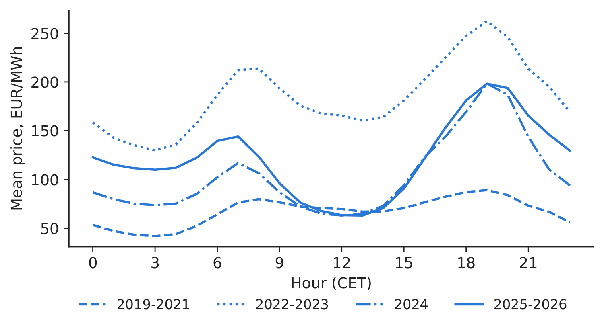
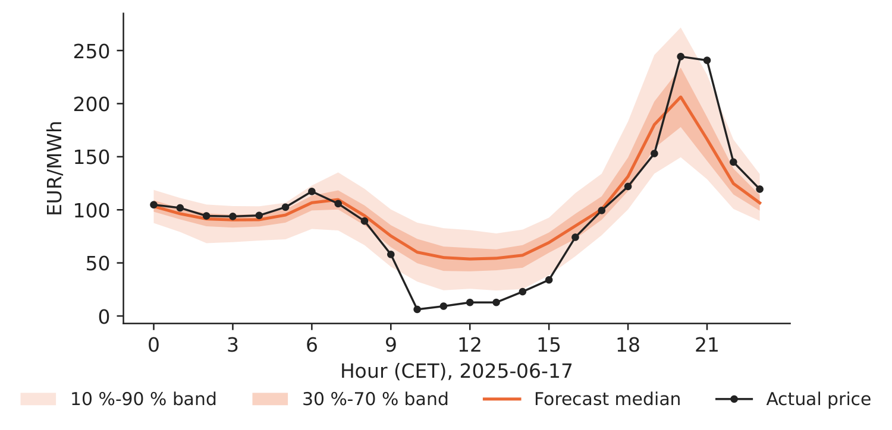
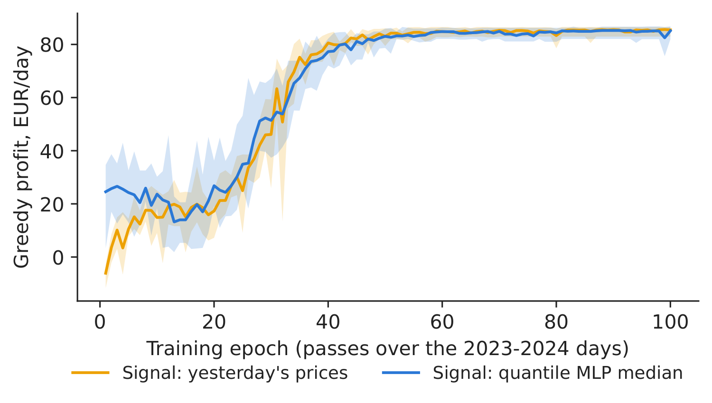
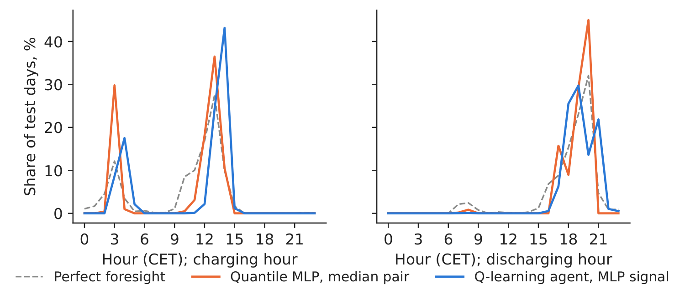
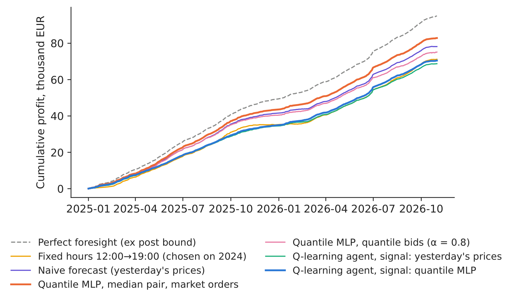

Case study 4 · Lecture 10
A battery on the day-ahead market — quantile networks and reinforcement learning
Prof. dr. Daniel Traian PELE
Bucharest University of Economic Studies, Department of Statistics and Econometrics
Romanian Academy, Institute for Economic Forecasting
The paper
Andrei, A.-V., Cepoi, C. O., Dumitrescu, B. A., Lessmann, S., Chiriac (Luchian), A.-C., Pele, D. T. & Petukhina, A. (2026). Joint probabilistic forecasting for battery arbitrage in day-ahead power markets. SSRN (Social Science Research Network) Working Paper 6872381. doi:10.2139/ssrn.6872381
The business question
An energy trader in Bucharest runs a 1 MW / 1 MWh battery energy storage system (BESS). Every day before noon it must submit tomorrow's bids to the day-ahead market without knowing tomorrow's prices. Two teams pitch a tool. The data-science team proposes a neural network that forecasts the whole distribution of tomorrow's 24 prices, followed by a simple rule that picks the hours. The quant team proposes a reinforcement-learning agent that learns by itself when to charge and when to discharge. The board asks two questions: which tool earns more on unseen data, and does any of them earn enough to repay the battery?
The reference paper
Question. How much arbitrage value can a battery capture ex ante, when it is operated on probabilistic price forecasts, and does that value justify the investment, in four interconnected Central and Eastern European (CEE) day-ahead markets (Sections 1 and 3)?
Data. Hourly day-ahead prices of Romania, Bulgaria, Hungary and the Czech Republic, January 2018 – September 2024 (59,160 hours per country), with 37 predictors: load, generation and their forecasts, lagged prices, Brent, TTF (Title Transfer Facility) gas and carbon prices, weather and calendar (Section 5.1). Battery: 1 MW / 1 MWh, efficiency 90 %, CAPEX (capital expenditure) 500,000 EUR, 15 years, 7 % discount rate, at most one cycle per day (Section 4).
Method. Distributional Random Forests (DRF) forecast the joint distribution of the 96 next-day prices (24 hours \(\times\) 4 countries), refitted on the last 365 days every 30 days. A quantile-based (QB) rule chooses the buy hour and the sell hour from the forecast medians and places limit bids at forecast quantiles; the benchmarks are a fixed pair of hours (NH) and daily perfect foresight (PF-Daily); the investment is judged with net present value (NPV), payback and break-even CAPEX.
Main findings of the paper.
- At \(\alpha=0.8\), QB beats NH in cumulative profit in all four markets, with relative gains of about 13 % in Czechia and 7 % in Romania (Section 6.2). Romania, January 2019 – September 2024: QB 142,671 EUR, NH 133,230 EUR, PF-Daily 188,249 EUR; payback 20.1 years for QB (single-country strategy table for Romania).
- Under the baseline CAPEX of 500,000 EUR none of the strategies covers the investment cost; the break-even CAPEX of the QB rule lies between 48 % and 75 % of the baseline (Section 6.2).
- Joint cross-border dispatch adds about 5 % to QB profit in Romania (149.9 vs 142.7 thousand EUR), “driven by persistent regional price differences” (Abstract; Table “Multi-zone joint-dispatch”). DRF accuracy for Romania: MAE (mean absolute error) 39.63, RMSE (root mean squared error) 49.60, CRPS (continuous ranked probability score) 28.12 EUR/MWh over 70 rolling windows (Table “DRF forecasting performance”).
The same paper is the basis of Case 6 of the course Energy Markets Quantitative Analysis (random forests); here we replace the forest by a neural network and add a reinforcement-learning agent. Related case of this course: explainable early warning of price spikes (Case 2).
The method
Intuition behind the method
A battery earns the spread between a cheap hour and a dear hour, minus the energy lost in charging and discharging. Looking back, the best two hours are obvious; looking forward, they are a forecast. Two ways to decide: forecast, then optimise (a network predicts the distribution of tomorrow's prices; a rule picks the hours), or learn the policy directly (an agent tries charging and discharging on past days and keeps what paid).
Profit of a cycle. With \(p_{d,h}\) the price of hour \(h\) on day \(d\) and efficiency \(\eta=0.9\) on each leg, buying in hour \(h_1\) and selling in \(h_2>h_1\) earns \(\pi_d(h_1,h_2)=\eta\,p_{d,h_2}-p_{d,h_1}/\eta\). Perfect foresight takes \(\max_{h_1<h_2}\pi_d\) each day (an ex post upper bound); fixed hours use the pair with the highest total profit in the previous year.
Quantile network. A multilayer perceptron (MLP) maps the information known at gate closure, \(\mathbf x_d\) (the 24 prices of \(d-1\) and of \(d-7\), the mean prices of Bulgaria and Hungary on \(d-1\), day of the week, season), through two hidden layers \(\mathbf h^{(l)}=\mathrm{ReLU}(\mathbf W^{(l)}\mathbf h^{(l-1)}+\mathbf b^{(l)})\) with 128 units to \(24\times9\) outputs \(\hat q_{\tau,d,h}\), \(\tau\in\{0.1,\dots,0.9\}\). It is trained with the pinball (quantile) loss \(\mathcal L=\frac{1}{24\cdot 9\,n}\sum_{d,h,\tau}\rho_\tau(p_{d,h}-\hat q_{\tau,d,h})\), \(\rho_\tau(u)=\max\{\tau u,(\tau-1)u\}\), whose minimiser is the conditional \(\tau\)-quantile; Adam, weight decay \(10^{-4}\), dropout 0.1, early stopping on a later validation window; quantiles are sorted afterwards so that they do not cross. Quality: \(\mathrm{CRPS}\approx\frac{2}{9}\sum_\tau\rho_\tau(p-\hat q_\tau)\) in EUR/MWh (lower is better) and the coverage of the 10 %–90 % band (target 80 %). Rules. Median pair: choose \((h_1,h_2)\) maximising \(\eta\hat q_{0.5,h_2}-\hat q_{0.5,h_1}/\eta\), trade only if it is positive, with market orders. Quantile bids (the paper's QB idea): bid to buy at \(\hat q_{1-q,h_1}\) and to sell at \(\hat q_{q,h_2}\), \(q=(1-\alpha)/2\), \(\alpha=0.8\).
Q-learning agent. A day is an episode of 24 steps. The state is \(s_h=(\mathit{soc}_h,\,b_h,\,b^{\max}_{>h},\,b^{\min}_{>h})\): the state of charge (empty/full), the octile of hour \(h\) in the forecast ranking of the day, and the highest and lowest octiles still to come. Actions: wait, charge, discharge; reward \(r_h\) = the cash flow of the hour. The action values are updated by \(Q(s_h,a_h)\leftarrow Q(s_h,a_h)+\lambda_n\big[r_h+\max_{a'}Q(s_{h+1},a')-Q(s_h,a_h)\big]\) (discount factor 1 within the day, step \(\lambda_n=n^{-0.6}\) after \(n\) visits), with \(\varepsilon\)-greedy exploration from 1 down to 0.05; the policy is then \(\arg\max_aQ(s,a)\). Investment. \(\bar\pi_{\mathrm{year}}=365\,\bar\pi_d\); \(\mathrm{NPV}=-\mathrm{CAPEX}+\bar\pi_{\mathrm{year}}\sum_{t=1}^{15}1.07^{-t}\); payback \(=\mathrm{CAPEX}/\bar\pi_{\mathrm{year}}\); NPV \(=0\) needs \(\bar\pi_{\mathrm{year}}=54,897\) EUR.
In practice
Judge a trading tool on profit in a later test period, over several seeds, next to fixed hours and perfect foresight; judge the battery on the realistic profit against the 54,897 EUR per year needed to repay it.
Replication on the course data
Notebook C4_notebook_EN.ipynb: hourly day-ahead prices of Romania, Bulgaria and Hungary (energy-charts.info), delivery days in Central European Time (CET) with 24 prices.
Final forecaster trained on 2019 – August 2024 (2,037 days), validation September–December 2024; the agent learns on 2023–2024 (719 days) from the out-of-sample forecasts of a network trained on 2019–2022; test: January 2025 – October 2026 (658 days), after the paper's sample. Five seeds for every network and every agent.
Classroom implementation: a neural network instead of DRF; only lagged prices and calendar as predictors; Romania only; one cycle per day.
Check on the paper's window (8 January 2019 – 30 September 2024), where no forecast is needed: our perfect-foresight profit is 187,456 EUR (paper 188,249) and the fixed hours 03:00\(\rightarrow\)19:00 CET earn 128,711 EUR (paper 133,230).

Figure 1. Mean hourly price shape in Romania, four periods.
Source: energy-charts.info; 2019–2026.

Figure 2. Quantile MLP forecast of one test day (mean of five seeds).
Source: our network; energy-charts.info.
Forecast quality on the test period. The quantile MLP has MAE 23.92 EUR/MWh (standard deviation over seeds 0.35), CRPS 19.11 EUR/MWh and a 10 %–90 % band that covers 75.0 % of hours (target 80 %); the naive “same hour yesterday” has MAE 27.43. The paper's DRF figures (MAE 39.63, CRPS 28.12) refer to 2019–2024, which includes the 2022 crisis, so the levels are not directly comparable.
Table 1. Battery strategies in Romania, 1 MW / 1 MWh, test period January 2025 – October 2026; networks and agents: mean of five seeds (SD = standard deviation of the profit over seeds).
| Strategy (1 MW / 1 MWh, Romania) | Profit, EUR | SD over seeds | EUR/year | NPV, EUR | Payback, years |
|---|---|---|---|---|---|
| Perfect foresight (ex post bound) | 95,053 | – | 52,727 | \(-\)19,766 | 9.5 |
| Fixed hours 12:00\(\rightarrow\)19:00 (chosen on 2024) | 71,205 | – | 39,498 | \(-\)140,253 | 12.7 |
| Naive forecast (yesterday's prices) | 78,176 | – | 43,365 | \(-\)105,035 | 11.5 |
| Quantile MLP, median pair, market orders | 82,878 | 1,038 | 45,973 | \(-\)81,278 | 10.9 |
| Quantile MLP, quantile bids (\(\alpha\) = 0.8) | 75,169 | 1,450 | 41,697 | \(-\)120,225 | 12.0 |
| Q-learning agent, signal: yesterday's prices | 68,755 | 140 | 38,139 | \(-\)152,633 | 13.1 |
| Q-learning agent, signal: quantile MLP | 70,488 | 1,679 | 39,100 | \(-\)143,878 | 12.8 |
Source: our computation; CAPEX 500,000 EUR, 15 years, 7 % (the paper's assumptions).

Figure 3. Cumulative profit on the test period, by strategy.
Source: our computation; energy-charts.info, 2025–2026.

Figure 4. Learning curve of the Q-learning agents (band: range over five seeds).
Source: our computation; training days 2023–2024.
What our data show. The daily shape changed: the fixed pair chosen on 2024 is 12:00\(\rightarrow\)19:00 CET (solar middays are cheap), whereas on the paper's window it was 03:00\(\rightarrow\)19:00. On the test period perfect foresight earns 95,053 EUR; the fixed hours earn 71,205 EUR and the naive forecast 78,176. The quantile MLP with the median pair earns 82,878 EUR (SD over seeds 1,038), 87.2 % of the perfect-foresight profit; with the paper's quantile bids it earns 75,169 EUR (both bids accepted on 71.0 % of days). The Q-learning agent learns a sensible policy (Figure 5) and earns 70,488 EUR with the MLP signal (SD 1,679) and 68,755 EUR with yesterday's prices (SD 140), about as much as the fixed hours: forecast-then-optimise wins here, because the planner sees the whole forecast curve while the agent sees it through a few ranks, and the agent learnt in 2023–2024, a different daily shape.

Figure 5. When does each strategy charge and discharge? Share of test days by hour (agents and networks: five seeds pooled).
Source: our computation; January 2025 – October 2026.
Decision number. The best realistic tool, the quantile MLP with the median pair, earns 45,973 EUR per year against the 54,897 EUR needed: NPV \(-\)81,278 EUR, payback 10.9 years, break-even CAPEX 418,722 EUR. Even perfect foresight (52,727 EUR per year, NPV \(-\)19,766 EUR) stays below the threshold: as in the paper, arbitrage alone does not repay a 500,000 EUR battery; a lower CAPEX or other revenues are needed.
Discussion questions for managers
- The quant team says the agent will improve with more data. What evidence (test period, seeds, benchmarks) would you require before giving it the battery?
- The fixed pair moved from night\(\rightarrow\)evening to midday\(\rightarrow\)evening. How often would you retrain the network and the agent, and who decides it?
- Why can quantile bids earn less than market orders when the forecast is good, although the paper finds them better? What does the acceptance rate tell you?
- Which other revenues (balancing, frequency reserves, capacity payments, a second daily cycle) would you add to close the gap to 54,897 EUR per year, and how certain are they?
- When is reinforcement learning worth its complexity for storage: one battery and one market, or many assets, several markets and degradation costs?
Limitations of the classroom replication
(i) One cycle per day and 1 MWh; real projects use 2–4 hour batteries and several revenue streams. (ii) Romania only, no cross-border dispatch, fees, intraday or balancing markets, no price impact. (iii) The network uses only lagged prices and calendar variables (the paper's DRF uses 37 predictors) and forecasts the 24 marginal distributions, not their joint distribution. (iv) The agent's state compresses the forecast into ranks, and it is trained once on 2023–2024; perfect foresight is an ex post bound. (v) No degradation cost and no grid tariffs.
Summary of case 4
- QuestionForecast-then-optimise or a learning agent: which earns more with a 1 MW / 1 MWh battery, and does it repay the battery?
- DataHourly day-ahead prices of Romania, Bulgaria and Hungary, 2019–October 2026; test 2025–2026.
- MethodQuantile MLP (pinball loss) + hour-picking rules; tabular Q-learning; five seeds; NPV.
- ResultMLP rule 87.2 % of perfect foresight; agent about as much as fixed hours; 45,973 EUR/year vs 54,897 needed.
- DecisionTrade on the network's forecast; do not invest on arbitrage alone at 500,000 EUR CAPEX.

Source: our computation on energy-charts.info prices, January 2025 – October 2026.
Abbreviations
| BESS | battery energy storage system |
|---|---|
| CAPEX | capital expenditure |
| CEE | Central and Eastern Europe |
| CET | Central European Time |
| CRPS | continuous ranked probability score |
| DRF | Distributional Random Forests |
| MAE | mean absolute error |
| MLP | multilayer perceptron |
| NH | naive fixed pair of hours |
| NPV | net present value |
| QB | quantile-based |
| RMSE | root mean squared error |
| TTF | Title Transfer Facility |
The text, numbers, charts and tables of this page are those of the case brief; every number is computed by the case notebook on the course data.